À quoi bon la Révolution, la Poésie ne suffit-elle pas ?
par Jean-Marc COLLET
Nous célèbrerons dans quelques mois la Révolution d’Octobre. Un centenaire. Oui, c’est cela, comme un centenaire abandonné dans une maison de vieux, et quelques vers fredonnés par des lèvres anxieuses et affaiblies… Qu’a-t-elle été ? Qu’en reste-il ? Qui en a reçu l’héritage de cette révolution aux tempes argentées ?
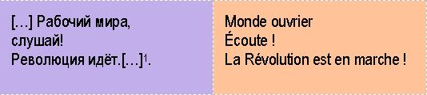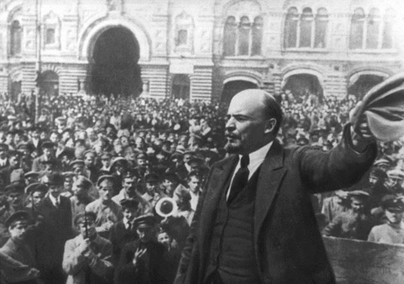Pour commencer, faut-il rappeler de quelle révolution il s’agit ? Pas le moins du monde. Chacun d’entre nous se souvient parfaitement d’Octobre 1917 et de cet élan d’espoir qu’elle fit naître dans les couches populaires, et notamment en Russie où les conditions d’existence et de travail des ouvriers et salariés étaient particulièrement difficiles :
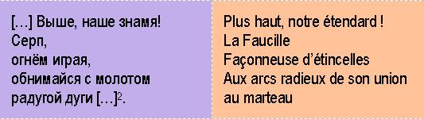Cette révolution s’est fossilisée dans nos mémoires. Chacun sait parfaitement aussi quelle fut la cascade d’événements qui nous menèrent à ce 25 décembre 1991, annonce inattendue faite par Mikhaïl Gorbatchev, moment de basculement du monde dans l’Inconnu. Cette annonce de l’homme de la Glasnost a bouleversé en définitive le monde dans lequel nous survivons aujourd’hui. En suivirent les dividendes de la paix, fumeuse annonce, la fin de l’histoire postulée, inepte prophétie, et tant d’autres, autant de prédictions bien vite rabattues par la réalité, c’est-à-dire la victoire du libéralisme décomplexé, sans masque désormais.
Mais revenons à la Révolution. Rappelons toutefois le détail de ce que fut Octobre 17 à ceux qui pourraient ne plus s’en souvenir. Les 25 et 26 octobre 1917, le palais d’Hiver de Petrograd tombe entre les mains des gardes rouges, les Bolcheviques :
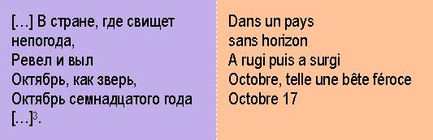Un coup de force opportuniste qui serait en somme comme une récolte de fleurs déjà coupées, depuis février 1917. Il faut dire que d’immenses jacqueries avaient pris corps, corps d’armées et de brigands aussi ; consécutivement aux revers et pertes militaires considérables tant en hommes qu’en territoires, des désertions en masse s’opéraient dans les armées. Cette Russie éternelle devenue « libérale » depuis février 1917, date de l’abdication du Tsar, devint brusquement bien séculaire. Souvenez-vous ! Ryleev : « И, в бурном мятеже ища свободных прав […]4 ». Un coup d’État le 25 août avait même été tenté par le général Kornilov dans l’espoir de reprendre le pouvoir et restaurer l’ordre aristocratique et bourgeois…
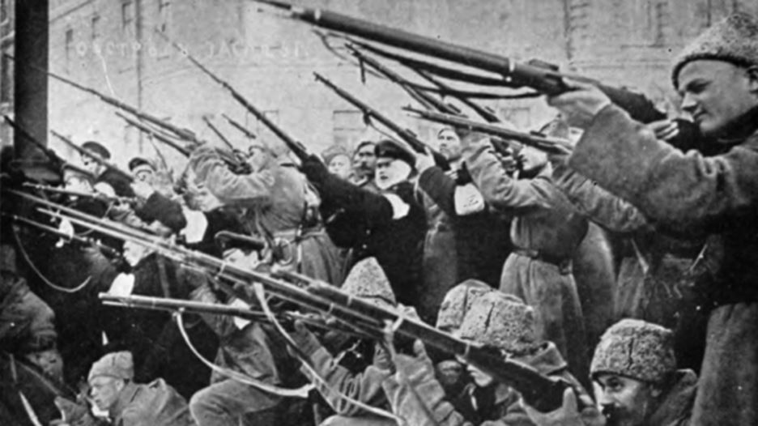Cette révolution s’inscrit dans un désordre social absolu dans les faits, et comme il a été dit, pour les Bolcheviques, une opportunité. Il faut ici rappeler que 1905, la toute première révolution « libérale » n’avait pas tenu tous ses espoirs, la libéralisation du régime ayant peu à peu été détricotée par le Tsar, la guerre ayant été le prétexte pour Nicolas II de mener ses visées sous-jacentes. L’intervention de Raspoutine auprès de la tsarine a continué de saper l’autorité de Nicolas, celui-ci décidant en 1915 de conduire lui-même ses armées. Les défaites succédant aux déconfitures, le Tsar n’est plus légitime. Octobre 17 n’est certainement qu’une guerre civile :
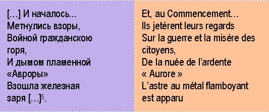Le pays est dépecé. Une lutte entre « réactionnaires » attachés à des notions clés, indépassables en quelque sorte : l’Empire, l’héritage de Byzance transmis à la Troisième Rome, et que se doit de préserver la Russie orthodoxe de toujours, une destinée messianique à laquelle elle ne pourrait pas échapper ; et les « progressistes » grands croyants à la catéchèse indépassable de la nécessité d’une « dictature du Prolétariat » pour atteindre aux plus hautes destinées sociales.
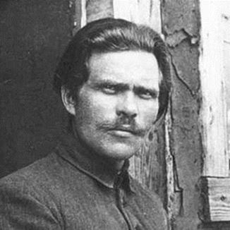Et ce conflit dure jusqu’en 1922. S’affrontent les armées blanches aux intérêts divergents et aux méthodes brutales à l’armée rouge aux méthodes radicales, mais aussi à des armées vertes aux engagements sauvages. Alors la Terreur prendra forme sous plusieurs couleurs, la Blanche, la Rouge, et même la Verte dont un certain Makhno en Ukraine sera le parangon. Et cette guerre civile russe est une déclinaison de la course au pouvoir, de l’opportunisme des uns, de l’esprit revanchard des autres.
À la lutte des classes on y croit. Et on y tient à cette époque. Et la guerre intérieure se poursuit longuement. Les conservateurs comme les révolutionnaires n’ont que l’idée du pouvoir. Pendant ce temps, le peuple a faim, l’hiver 1921 particulièrement froid quand l’été précédent fut particulièrement sec. La famine sévit, le cannibalisme surgit :
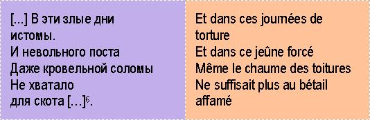Tant d’enfants abandonnés depuis de nombreuses années mourront ou seront embrigadés comme aujourd’hui en Afrique et ailleurs. On redécouvre à chaque printemps les enfants-soldats… Belle découverte ! Le pays sera à feu et à sang pendant de très nombreuses années. 1924 : la mort de Lénine le descendant de peuplades turco-mongole, et timonier russe ; Trotski l’Odessite, le dauphin déchu ; Staline le gangster géorgien, impassible, et les tentatives de reprise du pouvoir par les Blancs et les puissances occidentales abandonnées… Enfin ! La Révolution triomphe.
Les rouges règnent et fondent l’Union des Républiques Soviétiques Socialistes. Qu’y fait-on dans ce monde nouveau ? On arrête les gens sans raison et on les rend fou, de trouille. Les églises sont détruites en une nuit, souvenons-nous de la Basilique du Saint-Sauveur lieu sanctifié transformé en piscine, c’est dire combien on s’est attaché à déchristianiser les cœurs à cette époque : ce qui avait coûté 40 années d’effort pour donner au culte le faste estimé juste à Dieu.
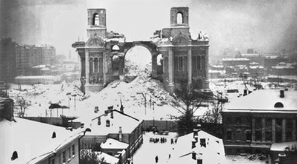Mais une vie n’avait pourtant pas suffi, fut-elle celle de Staline, pour phagocyter les esprits, et les âmes et les cœurs. Leur arracher cette croyance intime. Et extraire de ces cœurs la seule source de force et de résistance, leur attache spirituelle à laquelle ils ont pu, tout au long de ce désastre, se nourrir et jusqu’ à la fin de ce monde insensé. En l’Homme, ils ne parvenaient plus à croire, ni en sovieticus ni en aucun autre, ils n’en avaient plus la force, les Russes, au lendemain d’un certain décembre englouti comme l’Atlantide jadis, dans les mémoires fanées. Instants, ils se sont réfugiés en Christ, et les églises ont redonné du sens à leurs existences engourdies. Lors de son discours au monastère de Saint Joseph, Souvorov déclarera : «Мы русские! С нами Бог!7».
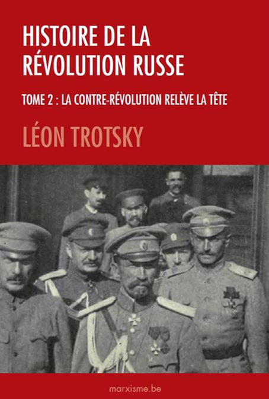Que nous reste-t-il donc de cette révolution ? Des milliers de tomes des œuvres de Lénine que personne ne lit plus en Occident, après un engouement qu’on n’est plus capable ni d’imaginer désormais ni de comprendre, alors que le tour de son intelligence fascine encore en Russie les intellectuels. Quelques textes de Trotsky, qui n’est pas plus lu aujourd’hui non plus en dehors de quelques cercles intellectuels ou groupuscules anarcho-communistes qui, plus qu’à ses écrits, vouent un culte à son meurtre, d’ailleurs digne des productions cinématographiques nord-américaines les plus affligeantes.
Et Staline dans tout ça ? Il reste, malgré ou en raison de sa volonté d’acier, le pivot de la mémoire soviétique. Il la condense. Tous sont jetés aujourd’hui aux orties sauf Staline, le « Père la Victoire » des Russes. Une guerre gagnée dans un effort collectif surhumain, sinon inhumain. 40 millions de morts. C’est pourtant ce que Staline résume à lui seul. Et pour la plupart nés Russes
Et malgré tout, malgré un chapelet de crimes, Loubianka, déportations, médecins juifs, Goulag, lui seul sera célébré dans les commémorations qui pourraient avoir lieu. Parce qu’avant lui, ce fut la chienlit, et après lui, se sera la chienlit. Une telle frénésie en brutalité en Russie soviétique ne pouvait avoir pour les individus que deux issues :
le suicide pour récuser l’absurde qui frappait chacun (qui sera le prochain ? moi ou le voisin ?) ;
la conversion, comme un refuge, la soumission à la divinité, unique manifestation « rationnelle» pour échapper à l’absurde des hommes sauvages du régime totalitaire, et au suicide.
De ses temps sinistres, ne restent que césium à Tchernobyl, les limons asséchés de la mer d’Aral, cotons sans débouchés d’Ouzbékistan, et les larmes semées en Afghanistan… Mais jamais ne put sous un contrôle tatillon mettre la poésie.
Alors pour faire en quelque sorte un pied-de-nez à cette histoire glorieuse, - excusez l’image qui rappelle l’asymétrie des corps dans les fosses communes, le pas-de-l’oie et les exécutions sommaires -, intéressons-nous un instant à la poésie en cette fin d’Union soviétique, à cette période charnière de son ébranlement prochain, entre le XXe Congrès du PCUS et la dissolution de 1991, c’est-à-dire la moitié de son existence politique.
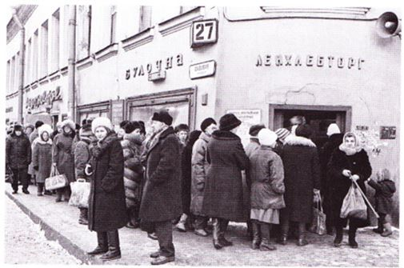Parce que pendant un demi-siècle, l’Union soviétique chancelait, et l’on voulait nous faire croire qu’elle dominait le monde. On faisait la queue devant les magasins dans le froid inhumain complice de ce régime, et se nourrir n’était rien d’autre qu’un chemin de croix supplémentaire.
Le plaidoyer officiel de Khrouchtchev pour sortir de la tyrannie de Staline (Khrouchtchev lui-même ayant été un des collaborateurs du tyran…), le « dégel ».
prometteur qui permit de découvrir, à l’intérieur comme à l’extérieur du territoire de l’Union des auteurs, des scientifiques, des spiritualistes et des philosophes, et le regel dix ans plus tard consécutif à la chute de Khrouchtchev, lui-même victime de 1956, la révolte hongroise et de 1964, les conservateurs impatientés renversent le Secrétaire, et instaureront une nouvelle chape sur le régime. Jusqu’à la Glasnost qui échappera à un apprenti sorcier déjà cité plus haut. Parce que louanger la Liberté, c’est prendre le risque que le Peuple y croie et y prenne goût… Mais de pain, il n’y avait pourtant pas.
Parmi ces auteurs, il y eut Joseph Brodsky. L’événement marquant de l’existence de ce poète n’est certainement pas tant le prix Nobel en 1987, ni tant l’abandon dans sa jeunesse par son amie Marina pour un autre prétendant, que le « regel » qui fait immédiatement exploser l’optimisme des intellectuels. 1964, c’est la condamnation pour « parasitisme » qui est infligée à Joseph Brodsky :
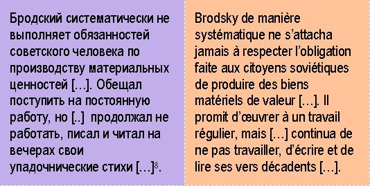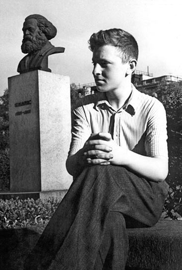 Brodsky jeuneLa poésie de Brodsky a pris racine dans le dégel succédant au XXe Congrès, et dans la lecture d’auteurs auxquels il a pu avoir accès à cette époque, sortis de l’ombre, auteurs soviétiques ou étrangers. C’est une espérance que ce 1956 fait jaillir, un espoir de lendemains heureux qui sourdait sous le manteau. Le lyrisme trouve un nouveau souffle. Brodsky fut, sans le désirer, une victime plus qu’autre chose, le phare d’une résistance intellectuelle (aidée en cela par l’Occident dans la Guerre Froide), dans cette société soviétique corsetée. Une façon parasitaire de résistance. Un poète non désigné par le système, l’Union des écrivains socialistes, non reconnu comme tel par les autorités : « Qui vous a fait poète ? aurait interrogé la juge lors de son procès. Il n’était bon qu’à être l’objet d’une rééducation, lui qui fut si médiocre élève, lui qui fut tout et rien, lui qui fut un traducteur anonyme et isolé de littérature anglophone.
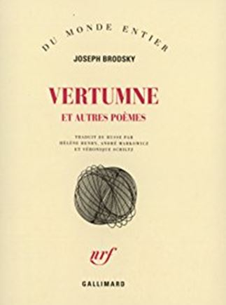En France, à l’étranger, on réservera un grand succès à Brodsky. Il est condamné, injustement d’évidence, alors il faut s’engager pour la défense des droits des artistes… Or, il ne faudrait surtout pas voir là un engouement exclusif pour sa poésie. Il faut y voir une manière de rachat de tant d’années passées en France notamment à s’enthousiasmer pour le régime soviétique. Face aux évidences, il fut bien temps de se racheter une conduite. D’autant que tous ne l’auront pas lue cette poésie, ou mal avisé, ils se sont emparés d’une figure, d’une icône, l’ont occidentalisée parce que les attributs qu’elle affichait étaient de n’être point un poète soviétique. De n’être point un poète de système et de cartes de rationnement assurées. Mais soyons certains qu’ils ne l’ont pas lu ce Brodsky mystique, ce Brodsky qui ente son vers dans la tradition, dans le passé, dans une Russie d’avant l’Union. Auquel cas, l’auraient-ils lu, qu’ils auraient pris la fuite, qu’ils l’auraient jeté aux orties, puisqu’il n’y a pas d’idée de progrès chez lui.
Et l’auraient-ils abandonné ou stigmatisé comme Soljenitsyne à son heure, parce que trop mystique, nationaliste à outrance, amoureux de Sa Russie, trop quelque chose qui heurte les esprits de nos contemporains par ici. L’ouest ne voit pas la lumière du soleil comme on la voit à l’est. Même en plissant les yeux. L’un est rentré en Russie, héros bientôt méprisé, l’autre lui a préféré ses souvenirs d’enfance et de jeunesse et n’y est pas retourné. Brodsky est mort en exil, en un exil volontaire mais salutaire, sans jamais cesser d’aimer sa Patrie :
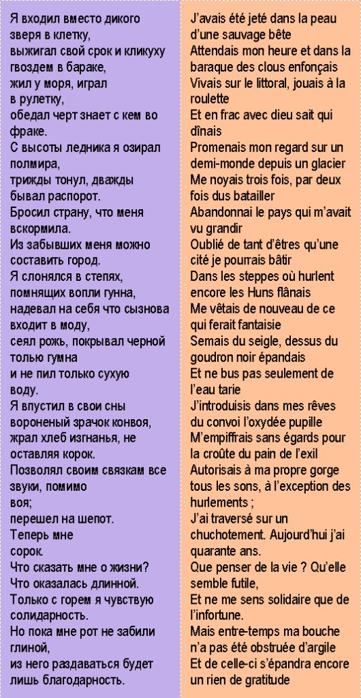Comment ce poète persiste-t-il alors qu’il pourrait n’être semble-t-il qu’un produit accidentel de l’URSS ? Comment ce qui eut dû rester de l’ordre du circonstanciel est encore œuvre significative ? Certainement peut-on émettre cette hypothèse qu’il n’était pas de son temps, qu’il n‘inscrivait pas son parcours littéraire, sa recherche, dans une perspective politique, il n’était pas un poète pro ou anti soviétique. N’étant rien de tout cela, voici ce qui peut aider à comprendre la pérennité de son œuvre. Brodsky est célébré aujourd’hui et traduit depuis 1987 chez Gallimard (prix Nobel oblige). Mais pourquoi un tel engouement pour ce poète aux écrits souvent intimistes, obscurs voire mystiques (oh le vilain mot !). Il n’est d’aucune dissidence, même si la définition qu’on en donne pourrait l’y inclure dans l’un de ses ensembles : le samizdat, la vie à l’étranger, l’exil forcé…
Brodsky nous parle aujourd’hui. Il fut, il est un poète qui a répondu à un appel ; hors de lui, une force s’est imposée. Il s’est soumis à la seule chose qui à ses yeux méritait de vivre : Dieu, c’est-à-dire pour le formuler autrement le Verbe dans la Poésie. Le poète s’incorpore dans la figure de saint Jean l’Apôtre. Songeons à cet endroit au Kaddish de Ginsberg (1961) qui n’est pas sans rappeler Brodsky, et lui est contemporain :
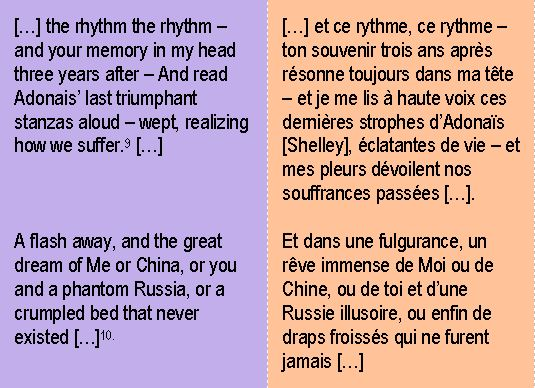Lira-t-on encore Brodsky, Akhmatova demain, dans cent ans quand il sera question des centièmes anniversaires de leurs morts respectives ? Saura-t-on ce que fut Octobre 17 dans quelques années encore, alors que le centenaire point son nez à l’horizon et que les faces des thuriféraires du communisme international se fichent en terre, se terrent, meurent ? En Russie, les églises sont redevenues lieux de vie.
« Célébrer » n’est d’ailleurs peut-être pas le terme qui convienne le mieux. En effet, mis à part les parutions aux allures de « marronniers » qui proposent toutes les clés de compréhension de cette Révolution dans les étals des kiosques à journaux et de buralistes, magazines mélangés aux productions de vulgarisation scientifique, aux revues créationnistes et sous la gondole supérieure qui exulte de ses magazines pornographiques, rien ne semble devoir stimuler le souvenir douloureux de cet événement majeur, stigmate d’un XXe siècle brutal, revanchard et fasciste. Parce que ce siècle, quoiqu’on en pense, fut totalitaire (vichyste, national-socialiste, communisme, maoïste…) ; que l’on cherche à opposer les thèses de Furet à celles de Nolte, ici comme là-bas, d’ouest en est, c’est une évidence que les causes produisent les mêmes effets, les cadavrées le démontrent, et les comparaisons de statistiques sordides de massacres n’y feront rien. Que les nazis aient exterminé en masse les Juifs mais ne l’aient décidé qu’en 1942 ou en 1943, que Staline n’ait pas attendu 1942 pour leurs imputer des complots, et que les régimes qui ont défiguré l’humanité aient pu s’affubler d’appellations multiples au long de ce siècle XXe siècle heureusement court, tout ceci n’a eu pour effet en définitive que d’opprimer les individus et d’expurger le langage de tout sens. Il y a grand œuvre à mener pour lui redonner tout son sens. Certains ajouteraient son bon sens…
Ainsi la Révolution au final n’aurait été, avide de son sang, gourmande de frayeurs et brutalités sensuelles, qu’une maîtresse passagère de l’humanité. Et les hommes, dessillés, un matin enfin lassés, les traits tirés et repus de plaisirs interdits, fruits du désir, se disent : « Il est temps d’en changer ». Demain, ils l’auront oubliée. Et c’est pourquoi, rendons hommage à cette mémoire aux effets retors qui n’inscrira plus que quelques lignes dans les manuels d’école des temps futurs alors que les vers de Brodsky seront éternels parce qu’ils ne cherchent à s’inscrire dans aucun temps.
La révolution ne servirait ainsi donc qu’à faire jaillir de la boue les hommes remarquables.
J.-M. C.
Traductions originales des textes russes.
Avec l’aimable et complice collaboration
d’Anna Gichkina pour la traduction et
le choix des textes russes.
1Маяковский, III Интернационал
2Маяковский, III Интернационал
3Есенин, стихотворение «Воспоминание», 1924
4Кондратий Рылеев, Стихотворение гражданин, 1824 : Et dans l’impétueuse révolte, c’est la Liberté qu’ils recherchaient !
5Есенин, стихотворение «Воспоминание», 1924
6Яков Петрович Полонский, В голодный год
7Суворов, Речь в монастыре святого Иосифа.
Nous sommes Russes ! Et Dieu nous soutient !
8Cf. Arrêt du Tribunal au sujet du cas de Brodsky :
Partager cette page